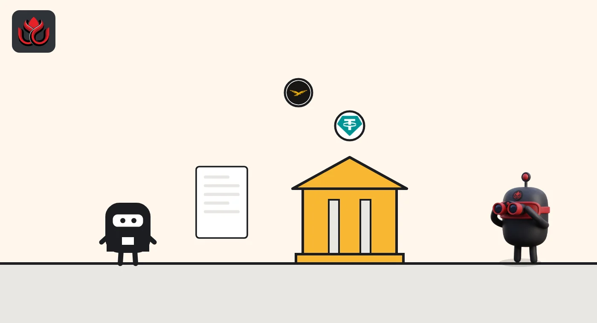

Senator Blumenthal gives Binance, Tether and World Liberty until January 4 to hand over records
Senator Richard Blumenthal says the three crypto firms have produced no records he asked for, some requests going back 18 months. His November 5 letters set a first check-in for November 9 and warn of "alternative measures" after January 4.
Key points
- On November 5, Senator Richard Blumenthal sent letters to Binance, Tether, World Liberty Financial and Fight Fight Fight LLC, the company behind the $TRUMP memecoin.
- Each letter says the firm has produced no responsive records. They must confirm receipt by November 9 and start producing records by November 30.
- After January 4, 2027, the subcommittee says it will consider "alternative measures to obtain compliance."
What happened
Senator Richard Blumenthal of Connecticut, ranking member (top Democrat) of the Senate Permanent Subcommittee on Investigations, sent a batch of letters on November 5. His press release calls him the subcommittee's incoming chair.
Four letters went to crypto companies: Binance, Tether, World Liberty Financial (WLFI) and Fight Fight Fight LLC. Others went to the Department of Homeland Security, the FCC and donors to a White House ballroom project.
The release warns that failing to hand over records by January 4, 2027 "will leave the Subcommittee with no choice" but to consider other steps. It does not say what those steps are. The letters are requests, not subpoenas.
What each firm is asked for
- Binance: the letter renews requests from February 24 and April 1, 2026, about two firms it names as Hexa Whale and Blessed Trust, users linked to Iran and Russia's shadow oil fleet, use of Tether and USD1 stablecoins, and compliance staff who were suspended or fired. It says Binance has "not produced any responsive records." The February 24 letter, attached, cites $1.7 billion in transfers to Iran, nearly $2 billion to sanctioned entities and about 2,000 accounts tied to Iranian entities. That letter cites news reports for this account; none of it is a court or regulator finding.
- Tether: the letter renews requests from June and October 22, 2026 (the attached June letter is dated June 4), about payments of more than $6 million to a consulting firm called Nxum, communications with Tether US chief executive Bo Hines from his White House period, and USDT use linked to Iran and Russia. The letter says the consulting payments ran at $415,000 a month.
- WLFI: the letter renews a May 6, 2025 request with nine questions on ownership, ties to Trump-linked businesses, customer checks, token revenue and deals with partners including Binance.

The deadlines
First letter to World Liberty Financial
First letter to Binance
First letter to Tether
Follow-up letters to all three, plus Fight Fight Fight LLC
Firms must confirm they received the letters
Firms must start producing records
Deadline for voluntary production
How long the requests have been open
The WLFI letter says the inquiry has run for 18 months. Binance's first request dates from February 24, 2026, and Tether's from June 4, 2026.
Months since the first request, to November 5, 2026
months
Source: Sen. Blumenthal's letters of November 5, 2026. Whole months, rounded down.
What we do not know
We found no public reply from the three companies to the November 5 letters. The letters say the firms have not produced records; they do not say whether the firms have answered in other ways.
Nothing in the letters is a finding of wrongdoing. They are requests for documents from one senator's office, copied to the subcommittee's chair, Senator Ron Johnson.
LC Insight analysis
This section is our reading of the facts above, not a statement of fact.
- We think the January 4 date matters because the release ties it to a change in who runs the subcommittee. If that change happens, the same requests could come with more weight behind them.
- For users, nothing changes today. These are records requests, not charges, freezes or orders against any of the firms.
What's next
- Any public reply from Binance, Tether or WLFI
- Whether records start arriving by November 30
- What the subcommittee does after January 4, 2027
Disclaimer. This article is based on public information and the sources listed below as of the update time shown. It is for information only and is not investment, legal or tax advice. Figures may change as companies and authorities publish new data.
Sources
- Sen. Richard Blumenthal, press release on letters to investigation targets (November 5, 2026)
- Letter from Sen. Blumenthal to Binance (November 5, 2026)
- Letter from Sen. Blumenthal to Tether (November 5, 2026)
- Letter from Sen. Blumenthal to World Liberty Financial (November 5, 2026)
- Sen. Blumenthal, first letter to Binance (February 24, 2026)